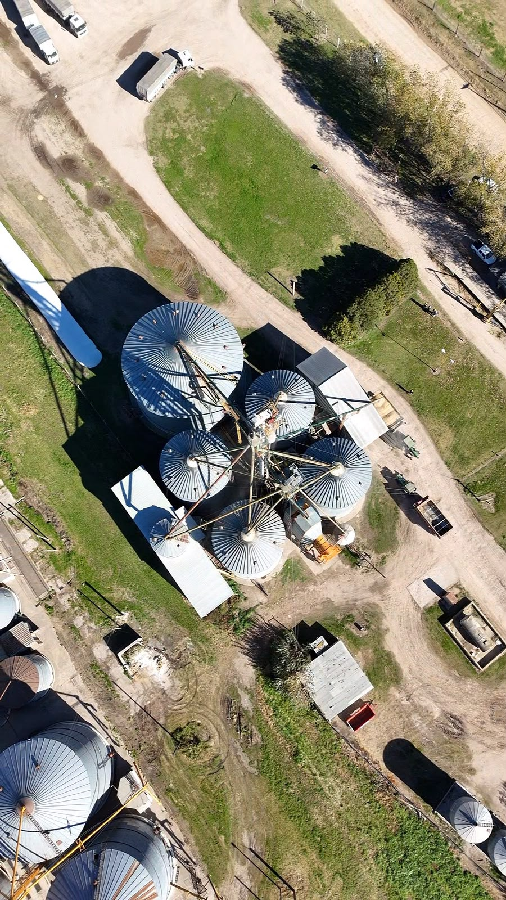
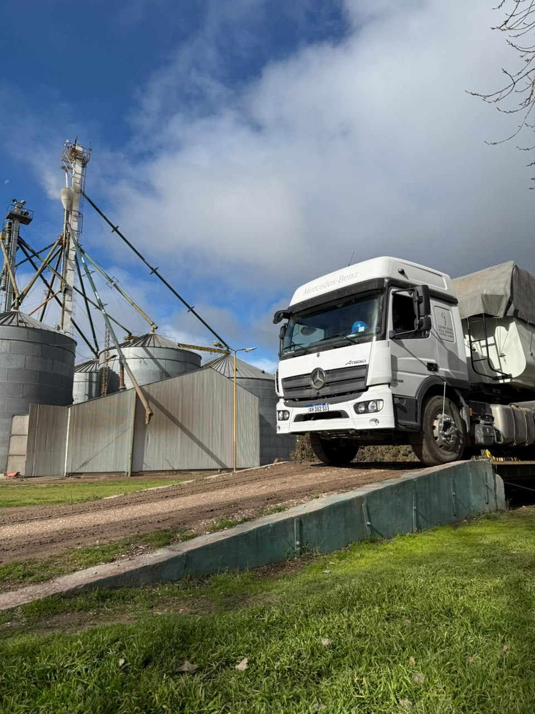
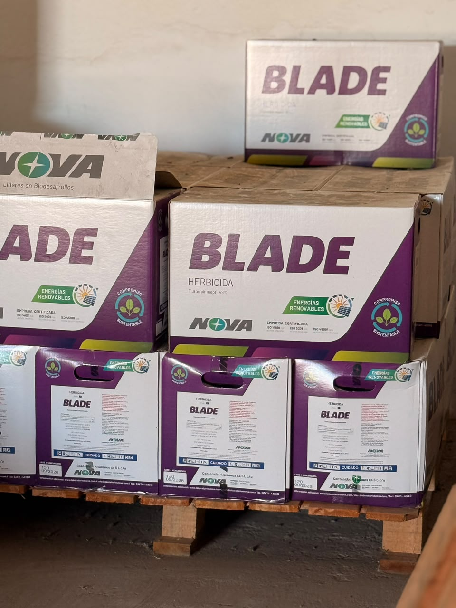
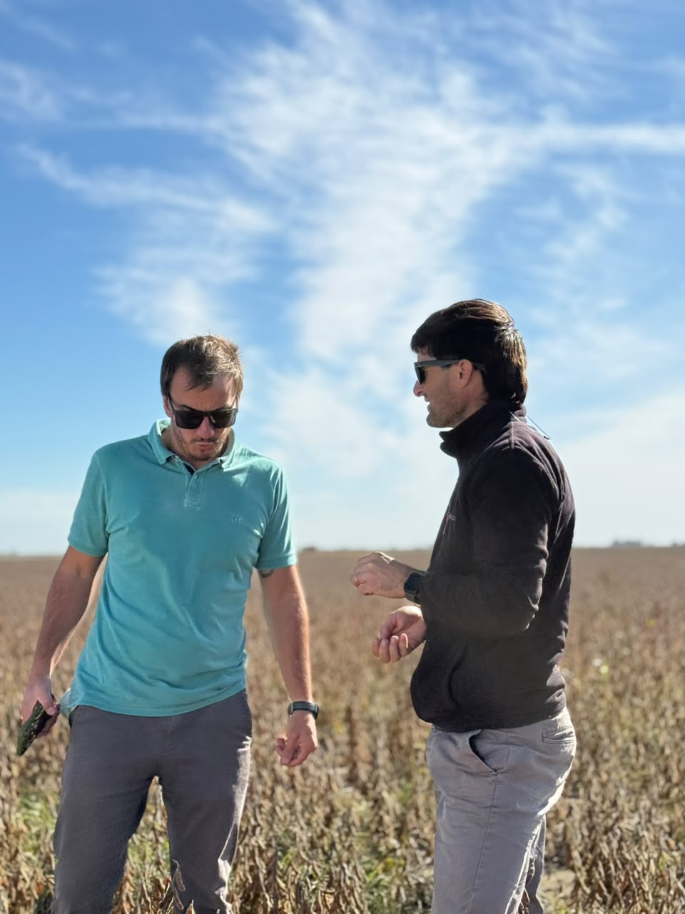

Acopio de cereales
Recepción, acondicionamiento y gestión de granos con infraestructura preparada para cada campaña.
Acopio, venta de insumos, semillas, fertilizantes, logística a campo y asesoramiento técnico para productores de Coronel Suárez y la región.
Una propuesta integral para acompañar al productor desde la planificación hasta la comercialización.

Recepción, acondicionamiento y gestión de granos con infraestructura preparada para cada campaña.

Coordinación logística para mover tu producción de manera eficiente, segura y ordenada.

Semillas, híbridos, fertilizantes, fitosanitarios y soluciones adaptadas a cada estrategia de manejo

Asesoramiento especializado para tomar mejores decisiones productivas y comerciales.
Agro Coronel Suárez trabaja desde hace más de cinco décadas junto al productor agropecuario, brindando servicios para cada etapa de la campaña.
Nuestra historia está vinculada al crecimiento de Coronel Suárez y su región. A lo largo de los años fuimos incorporando nuevas soluciones, infraestructura y servicios, manteniendo como eje la cercanía, la atención personalizada y el compromiso con quienes producen.
Hoy seguimos mirando hacia adelante con la misma convicción: acompañar cada decisión con experiencia, conocimiento técnico y relaciones de largo plazo.
Experiencia, cercanía y una mirada de largo plazo para seguir creciendo junto a los productores de la región.
Brindar soluciones integrales para el productor agropecuario, combinando servicios, insumos, logística y asesoramiento con atención cercana y personalizada.
Seguir siendo un socio estratégico para productores y empresas del agro, incorporando herramientas y servicios que simplifiquen la gestión y generen relaciones duraderas.
Trabajo responsable, confianza, conocimiento del sector, atención personalizada y compromiso permanente con la comunidad productiva de Coronel Suárez y la región.
Accedé de forma rápida a herramientas, consultas y gestiones vinculadas a tu actividad como productor.
Ir al Portal ClientesDejá tu mensaje o comunicate directamente con ACS para consultas comerciales, insumos, logística o acopio.